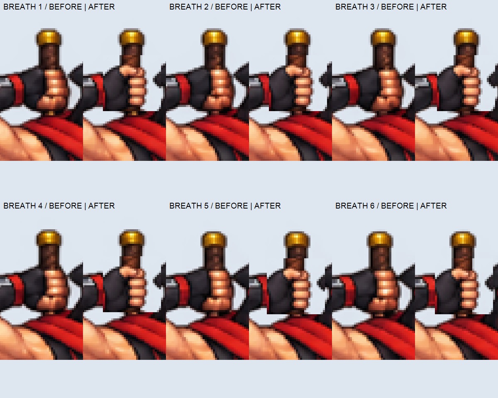

TASK10.51 · BẢN SỬA CHỜ DUYỆT
Ninja Hoả — tay nắm kiếm và hai nhịp vào thế
Frame1: Nâng tay vào kiếm.
Frame2: Đưa tay về chuôi kiếm.
Frame3–8: giữ thế/thở; sửa chiều bàn tay phải, giữ phần hình ảnh sạch của bản50.
Đang tải ảnh…
Soi vai — tay — nách — eo
Hai frame vào thế + sáu frame giữ thế
Soi bàn tay trước/sau ở sáu nhịp thở

GIF vào thế · GIF vòng thở · Atlas mới · Hồ sơ sửa


Trái: Idle10.47 đã chốt. Giữa: bản50 giữ làm chuẩn hình ảnh sạch. Phải: bản51 sửa bàn tay và bổ sung hai frame vào thế. Chưa thay production hoặc game.